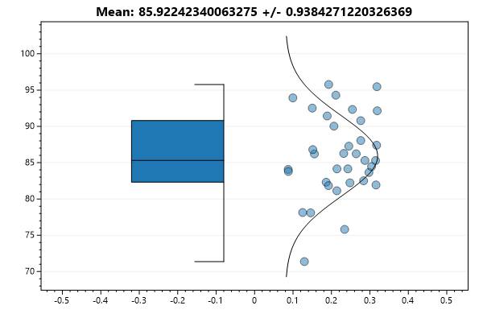
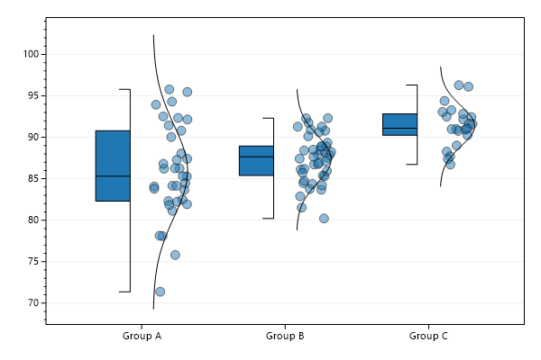
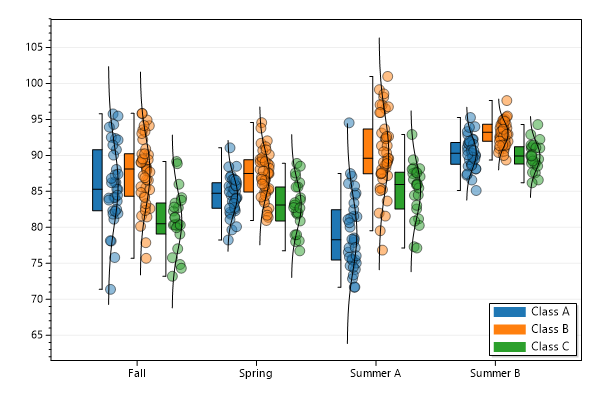
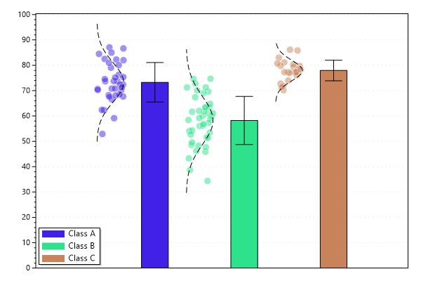

ScottPlot Cookbook: Plottable - Population
⚠️ Documentation is version-specific: This page was generated forScottPlot 4.1.4-beta
Additional documentation and more version-specific cookbooks are on the ScottPlot Website
Population Plot
The population plot makes it easy to display populations as bar graphs, box-and-whisker plots, scattered values, or box plots and data points side-by-side. The population plot is different than using a box plot with an error bar in that you pass your original data into the population plot and it determines the standard deviation, standard error, quartiles, mean, median, outliers, etc., and you get to determine how to display these values.var plt = new ScottPlot.Plot(600, 400);
// create sample data to represent test scores
Random rand = new Random(0);
double[] scores = DataGen.RandomNormal(rand, 35, 85, 5);
// First, create a Population object from your test scores
var pop = new Statistics.Population(scores);
// You can access population statistics as public fields
plt.Title($"Mean: {pop.mean} +/- {pop.stdErr}");
// You can plot a population
plt.AddPopulation(pop);
// improve the style of the plot
plt.XAxis.Ticks(true);
plt.XAxis.Grid(false);
plt.SaveFig("population_quickstart.png");

Multiple Populations
Multiple populations can be assembled into an array and plotted as a single group.var plt = new ScottPlot.Plot(600, 400);
// create sample data to represent test scores
Random rand = new Random(0);
double[] valuesA = DataGen.RandomNormal(rand, 35, 85, 5);
double[] valuesB = DataGen.RandomNormal(rand, 42, 87, 3);
double[] valuesC = DataGen.RandomNormal(rand, 23, 92, 3);
// create population objects for each set of data values
var popA = new Statistics.Population(valuesA);
var popB = new Statistics.Population(valuesB);
var popC = new Statistics.Population(valuesC);
// combine several populations into an array and plot it
var poulations = new Statistics.Population[] { popA, popB, popC };
string[] populationNames = { "Group A", "Group B", "Group C" };
plt.AddPopulations(poulations);
// improve the style of the plot
plt.XAxis.Grid(false);
plt.XTicks(populationNames);
plt.SaveFig("population_multiple.png");

Multiple Series
Multiple series of population groups can be plotted Here each group is clustered on the horizontal axis, and each series is given a different color and appears in the legend.var plt = new ScottPlot.Plot(600, 400);
// Each class (A, B, C) is a series.
// Each semester (fall, spring, summer A, summer B) is a group.
// create sample data to represent test scores for each class in each semester
Random rand = new Random(0);
double[] scoresAfall = DataGen.RandomNormal(rand, 35, 85, 5);
double[] scoresBfall = DataGen.RandomNormal(rand, 42, 87, 5);
double[] scoresCfall = DataGen.RandomNormal(rand, 23, 82, 5);
double[] scoresAspring = DataGen.RandomNormal(rand, 35, 84, 3);
double[] scoresBspring = DataGen.RandomNormal(rand, 42, 88, 3);
double[] scoresCspring = DataGen.RandomNormal(rand, 23, 84, 3);
double[] scoresAsumA = DataGen.RandomNormal(rand, 35, 80, 5);
double[] scoresBsumA = DataGen.RandomNormal(rand, 42, 90, 5);
double[] scoresCsumA = DataGen.RandomNormal(rand, 23, 85, 5);
double[] scoresAsumB = DataGen.RandomNormal(rand, 35, 91, 2);
double[] scoresBsumB = DataGen.RandomNormal(rand, 42, 93, 2);
double[] scoresCsumB = DataGen.RandomNormal(rand, 23, 90, 2);
// Collect multiple populations into a PopulationSeries.
// All populations in a series will be styled the same and appear once in the legend.
var popsA = new Statistics.Population[] {
new Statistics.Population(scoresAfall),
new Statistics.Population(scoresAspring),
new Statistics.Population(scoresAsumA),
new Statistics.Population(scoresAsumB)
};
var popsB = new Statistics.Population[] {
new Statistics.Population(scoresBfall),
new Statistics.Population(scoresBspring),
new Statistics.Population(scoresBsumA),
new Statistics.Population(scoresBsumB)
};
var popsC = new Statistics.Population[] {
new Statistics.Population(scoresCfall),
new Statistics.Population(scoresCspring),
new Statistics.Population(scoresCsumA),
new Statistics.Population(scoresCsumB)
};
// create a population series for each array of populations and give it a label
var seriesA = new Statistics.PopulationSeries(popsA, "Class A");
var seriesB = new Statistics.PopulationSeries(popsB, "Class B");
var seriesC = new Statistics.PopulationSeries(popsC, "Class C");
var allSeries = new Statistics.PopulationSeries[] { seriesA, seriesB, seriesC };
// create a MultiSeries from multiple population series and plot it
var multiSeries = new Statistics.PopulationMultiSeries(allSeries);
plt.AddPopulations(multiSeries);
// improve the style of the plot
string[] groupNames = new string[] { "Fall", "Spring", "Summer A", "Summer B" };
plt.XTicks(groupNames);
plt.XAxis.Grid(false);
plt.Legend();
plt.SaveFig("population_multiSeries.png");

Advanced Population Styling
Populations can be displayed many different ways. Scatter values can be displayed on either side of the bar or bar. Populations can be shown as bar graphs instead of box plots. Public fields allow many additional customizations.var plt = new ScottPlot.Plot(600, 400);
// create sample data to represent test scores
Random rand = new Random(0);
double[] scoresA = DataGen.RandomNormal(rand, 35, 72, 7);
double[] scoresB = DataGen.RandomNormal(rand, 42, 57, 10);
double[] scoresC = DataGen.RandomNormal(rand, 23, 79, 5);
// To create a population series we need to start with an array of populations.
// In this example each population series just has one population in it.
var popsA = new Statistics.Population[] { new Statistics.Population(scoresA) };
var popsB = new Statistics.Population[] { new Statistics.Population(scoresB) };
var popsC = new Statistics.Population[] { new Statistics.Population(scoresC) };
// create a PopulationSeries for each set of scores, naming it in the process
var seriesA = new Statistics.PopulationSeries(popsA, "Class A");
var seriesB = new Statistics.PopulationSeries(popsB, "Class B");
var seriesC = new Statistics.PopulationSeries(popsC, "Class C");
var seriesArray = new Statistics.PopulationSeries[] { seriesA, seriesB, seriesC };
// create a MultiSeries object by passing in the array of series objects and plot it
var multiSeries = new Statistics.PopulationMultiSeries(seriesArray);
var popPlot = plt.AddPopulations(multiSeries);
// now customize its public fields to extensively customize its display options
popPlot.DistributionCurve = true;
popPlot.DistributionCurveLineStyle = LineStyle.Dash;
popPlot.ScatterOutlineColor = System.Drawing.Color.Transparent;
popPlot.DataFormat = ScottPlot.Plottable.PopulationPlot.DisplayItems.ScatterAndBox;
popPlot.DataBoxStyle = ScottPlot.Plottable.PopulationPlot.BoxStyle.BarMeanStDev;
// colors are managed at the population series level:
foreach (var popSeries in popPlot.MultiSeries.multiSeries)
popSeries.color = Tools.GetRandomColor(rand);
// improve the style of the plot
plt.Legend(location: Alignment.LowerLeft);
plt.XAxis.Ticks(false);
plt.XAxis.Grid(false);
plt.YAxis.MajorGrid(lineStyle: LineStyle.Dot);
plt.SetAxisLimits(yMin: 0);
plt.SaveFig("population_advanced.png");
